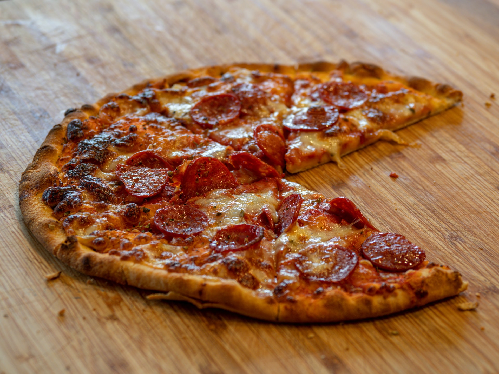

- JEWEL
- KIDDOS
- LEARNING
KIDDOS
Ian & Tei Brothers are creating Adventurous Life in Knoxville, TN web pages
Favorites
Food
Ian loves pepperoni pizza the most. He can easily eat 3 slices of pizza. However, Tei
meat lover. His favorite meat is sliced honey sandwitch ham.

SuperHero
Ian loved 'Spiderman' since he was 3. He has lots of Spiderman merchandizes such
such as T-shirts, shoes, watches, alarm clock, toys, fidget spinner, backpacks, lunchbox, figures, you name it.
As he getting exposed to other TV programs, he does not stick on a single character. Rather, he likes game characters
and other cartoon characters. His younger brother Tei loves his brothers all-time favorite 'Spiderman' now. Tei likes
to wear his brother's spidey T- shirts, also likes what his brother Ian likes now.